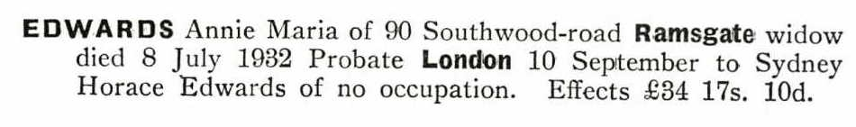
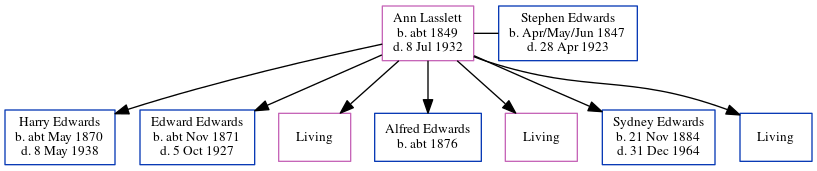

Ann Maria Edwards (née Lasslett) c1849 - 1932
[ Home ] | [ Calendar ] | [ Surnames Index ] | [ Errors ] | [ Family History ]Ann Lasslett, the wife of Stephen Edwards (the three times great-uncle of Nigel Horne), was born in Herne Bay, Kent, England c. 18491,2,3,4,5,6, was baptised in Kent, England on 29 Jun 1849 and married Stephen (a stationery engine driver with whom she had 7 children: Harry Walter, Edward Frederick, Florence Maria, Alfred W, Helen Gertrude, Sydney Horace and Percy Leopold, along with 3 surviving children) in St Lawrence, Thanet, Kent on 26 Mar 187010.
During her life, she was living at Chapel Row, St Lawrence, Thanet, Kent on 2 Apr 187114; at Whitehall Waterworks, St Lawrence, Thanet, Kent on 3 Apr 188115; in West Dumpton, Thanet, Kent on 5 Apr 189113; at Waterworks Cottage, St Lawrence, Thanet, Kent on 31 Mar 190112; at Southwood Pumping Station, St Lawrence, Thanet, Kent on 2 Apr 191111; and at 90 Southwood Road, Ramsgate, Kent in 1932.
She died on 8 Jul 1932 in Ramsgate, Kent, England6,7,8,9.
Children
- Harry Walter was born c. May 1870
- Edward Frederick was born c. Nov 1871
- Alfred W was born c. 1876
- Sydney Horace was born on 21 Nov 1884
Citations
- 1871 England Census Online publication - Provo, UT, USA: The Generations Network, Inc., 2004.Original data - Census Returns of England and Wales, 1871. Kew, Surrey, England: The National Archives of the UK (TNA): Public Record Office (PRO), 1871. Data imaged from the National
- 1881 England Census Online publication - Provo, UT, USA: The Generations Network, Inc., 2004. 1881 British Isles Census Index provided by The Church of Jesus Christ of Latter-day Saints © Copyright 1999 Intellectual Reserve, Inc. All rights reserved. All use is subject to the
- 1891 England Census Online publication - Provo, UT, USA: The Generations Network, Inc., 2005.Original data - Census Returns of England and Wales, 1891. Kew, Surrey, England: The National Archives of the UK (TNA): Public Record Office (PRO), 1891. Data imaged from The National
- 1901 England Census Online publication - Provo, UT, USA: The Generations Network, Inc., 2005.Original data - Census Returns of England and Wales, 1901. Kew, Surrey, England: The National Archives of the UK (TNA): Public Record Office (PRO), 1901. Data imaged from the National
- 1911 England Census Online publication - Provo, UT, USA: Ancestry.com Operations, Inc., 2011.Original data - Census Returns of England and Wales, 1911. Kew, Surrey, England: The National Archives of the UK (TNA), 1911. Data imaged from the National Archives, London, England.
- England & Wales, Death Index: 1984-2005 Online publication - Provo, UT, USA: The Generations Network, Inc., 2007.Original data - General Register Office. England and Wales Civil Registration Indexes. London, England: General Register Office. © Crown copyright. Published by permission of the Cont
- England & Wales Government Probate Death Index 1858-2019 - Findmypast
- England & Wales deaths 1837-2007 - Findmypast
- England & Wales, National Probate Calendar (Index of Wills and Administrations),1861-1941 Online publication - Provo, UT, USA: Ancestry.com Operations Inc, 2010.Original data - Principal Probate Registry. Calendar of the Grants of Probate and Letters of Administration made in the Probate Registries of the High Court of Justice in England. Londo
- England & Wales, FreeBMD Marriage Index: 1837-1915 Online publication - Provo, UT, USA: The Generations Network, Inc., 2006.Original data - General Register Office. England and Wales Civil Registration Indexes. London, England: General Register Office. © Crown copyright. Published by permission of the Cont
- 1911 Census for England & Wales - Findmypast (was age 61 and the wife of the head of the household)
- 1901 England, Wales & Scotland Census - Findmypast (was age 51 and the wife of the head of the household)
- 1891 England, Wales & Scotland Census - Findmypast (was age 41 and the wife of the head of the household)
- 1871 England, Wales & Scotland Census - Findmypast (was age 21 and the wife of the head of the household)
- 1881 England, Wales & Scotland Census - Findmypast (was age 31 and the wife of the head of the household)
Media
Annie Lassett - probate

England & Wales deaths 1837-2007 - BMD/D/1932/3/AZ/000227/072
England & Wales marriages 1837-2008 - BMD/M/1870/1/AZ/000129/079
Kent, Canterbury Archdeaconry marriages 1538-1928 - GBPRS/CANT/M/97021770/2
England Marriages 1538-1973 - R_848394556/2
1871 England, Wales & Scotland Census - GBC/1871/0014303327
1881 England, Wales & Scotland Census - GBC/1881/0004864111
England & Wales deaths 1837-2007 - BMD/D/1932/3/AZ/000227/067
England & Wales Government Probate Death Index 1858-2019 - GBOR/GOVPROBATE/C/1932-1932/00033538
Family Tree
Map
Generated by ged2site. Last updated on Jul 3, 2024
Known Issues
Baptism information not used to determine a parent
Residence record for 1932 contains no citation
No records of living with anyone